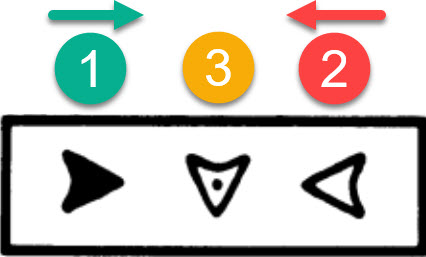

Testes de Atenção
Aprovação Psycho – Classificação e Estratégia
Testes de atenção são avaliações psicológicas projetadas para medir a capacidade de concentração, foco seletivo e detecção de estímulos em tarefas cronometradas. Eles geralmente envolvem atividades como identificar símbolos específicos em listas ou folhas com figuras geométricas, como triângulos ou flechas, sob limite de tempo.
2 Tipos de Testes
1. Atenção Concentrada
Avalia a capacidade de selecionar uma fonte de informação (estímulo) e manter o foco nela por um determinado tempo, ignorando distratores.
2. Atenção Concentrada Complexa
Similar à atenção concentrada, mas com maior nível de dificuldade, envolvendo distratores com alto grau de semelhança e simetria, além de maior pressão de tempo.
3. Atenção Dividida
Avalia a capacidade de manter a atenção com qualidade em dois ou mais estímulos simultaneamente.
4. Atenção Difusa
Focaliza diversos estímulos dispersos espacialmente de uma só vez, exigindo captação rápida e panorâmica.
5. Atenção Alternada
Avalia a capacidade de mudar o foco de atenção de um estímulo para outro ou alternar entre regras diferentes.
3 Testes de Atenção Difusa
- Testes Comuns
- TADIM (Original e 2): Utiliza placas de trânsito como sequência numérica.
- TEDIF (1, 2 e 3): Utiliza formas geométricas.
- Mais Usados em Concursos e Seleções: TADIM, TADIM-2 e TEDIF-1
Exemplo visual: TEDIF-1 e TADIM-1
TADIM 1 e 2
- Objetivo: Marcar os números de 1 a 50 na sequência, dentro das placas.
- Deve-se circular o último número marcado ao final da prova.
Características Principais
Dica
Colocar os dedos sobre os números próximos para facilitar a localização e manter o ritmo
TEDIF
- Objetivo: Marcar os números de 1 a 50 na sequência.
- Após o tempo de um minuto, o psicólogo diz: terminou o primeiro minuto, façam um círculo no último losango que vocês riscaram e virem a folha.
Características Principais
TEDIF 1
Dica
Colocar os dedos sobre os números próximos para facilitar a localização e manter o ritmo
TEDIF-2
Dica - Bizu de Cores
- Ceará Vs Bahia (Preto/Branco vs Azul/Vermelho/Branco?) - Contexto do usuário
- Os números seguirão a sequência das cores:
- • Verde e amarelo
- • Vermelho e azul
Bizu das cores TEDIF-2
TEDIF-3
Dica - Bizu de Cores (Israel + semáforo)
- Branco
- Azul
- Vermelho
- Amarelo
- Verde
Sequência de Cores
Bizu de Formas
- Triângulo (1-10)
- Quadrado (11-20)
- Pentágono (21-30)
- Hexágono (31-40)
- Octógono (41-50)
Referência de Formas
8 CTA (Coleção de Testes de Atenção)
A Coleção de Testes de Atenção (CTA) avalia diferentes tipos de atenção através da localização de figuras alvo entre distratores. É composta por três testes principais:
CTA-AC (Atenção Concentrada)
Dica Importante
Caso perceba que errou, circule a figura errada que ela não será descontada.
CTA-AD (Atenção Dividida)
CTA-AA (Atenção Alternada)
9 Testes de Rotas
Os testes de Rotas avaliam a capacidade de atenção do indivíduo enquanto ele executa uma tarefa específica seguindo um percurso em zigue-zague.
Dica
Existem sempre 8 figuras por linha.
Rota A (Atenção Alternada)

Rota C (Atenção Concentrada)
Rota D (Atenção Dividida)

10 BPA - Bateria Psicológica para Avaliação de Atenção
O BPA é um conjunto de testes psicológicos voltados para avaliar diferentes tipos de atenção. É dividido em três versões principais:
BPA-AC (Atenção Concentrada)
Bizu - Padrão 75
- 7 figuras corretas na primeira linha
- 5 figuras corretas na segunda linha

BPA-AD (Atenção Dividida)
Bizu
6 figuras corretas por linha, sendo duas de cada tipo. Para facilitar, deve-se procurar na seguinte ordem:

BPA-AA (Atenção Alternada)
Bizu - Padrão 57
- 5 figuras corretas na primeira linha
- 7 figuras corretas na segunda linha

11 BDA - Bateria Diferencial de Atenção
A Bateria Diferencial de Atenção (BDA) é um instrumento que avalia três modalidades de atenção: alternada, concentrada e difusa/dividida. Para cada uma dessas modalidades, a BDA disponibiliza três formas distintas de avaliação (A, B e C). Assim, tanto a atenção alternada quanto a concentrada e a difusa/dividida podem ser avaliadas em qualquer uma dessas três formas, totalizando nove combinações possíveis para mensuração dos diferentes tipos de atenção.
BDA-AC (Atenção Concentrada)
Atenção
Não há quantidade fixa por linha.
BDA-AD (Atenção Dividida)
Atenção
Não há quantidade fixa por linha.
BDA-AA (Atenção Alternada)
Atenção
Não há quantidade fixa por linha.
12 TECON (Atenção Concentrada Complexa)
Atenção Concentrada Complexa é a habilidade mental de focar em um grupo de estímulos enquanto ignora um grupo maior e semelhante de distrações.
TECON-1
Como Anular Erro
Se por acaso alguém riscar errado um quadrado, deverá fazer um outro risco, completando um X. O erro será processado como anulado. (No simulador: Clique Duplo)

Dica 1
- 6 figuras corretas por linha (a última linha só tem 4)
- Se tiver 2 azuis ⬆️ ⬆️, terá 2 vermelhos ⬇️⬇️. Logo resta 1 amarelo ➡️ e 1 verde ⬅️.
- Se tiver 2 verdes ⬅️⬅️, terá dois amarelos ➡️➡️. Logo resta 1 azul ⬆️ e 1 vermelho ⬇️.
Dica 2
- Céu 🟦 e Inferno 🟥
- Vai buscar o ouro 🟨, volta para floresta 🟩
TECON-2
Dica 1
- 6 figuras corretas por linha
- Se tiver 2 azuis, terá 2 vermelhos. Logo resta 1 amarelo e 1 verde.
- Se tiver 2 verdes, terá dois amarelos. Logo resta 1 azul e 1 vermelho.
Dica 2
TECON-3
Dica 1
- 6 figuras corretas por linha
- Se tiver 2 azuis, terá 2 vermelhos. Logo resta 1 amarelo e 1 verde.
- Se tiver 2 verdes, terá dois amarelos. Logo resta 1 azul e 1 vermelho.
Dica 2
13 TEACO (Teste de Atenção Concentrada)
O TESTE TEACO é uma avaliação psicológica usada para medir a capacidade de focar em um único estímulo em meio a distratores, onde o candidato deve riscar alvos específicos em uma folha dentro de um tempo limitado.
Atenção
Responda por coluna seguindo a direção das setas, não por linha.
Dica
Tem sempre 9 figuras corretas por coluna.
14 TEADI (Teste de Atenção Dividida)
O Teste TEADI (Teste de Atenção Dividida) é um instrumento psicológico que avalia a capacidade de uma pessoa de focar em dois ou mais estímulos ao mesmo tempo, ignorando distrações.
Objetivo: Medir a capacidade de atenção dividida, ou seja, de atender a múltiplas demandas ou estímulos simultaneamente.
Como Funciona: O indivíduo precisa procurar e identificar estímulos específicos (como formas geométricas) em uma prancha, alternando a atenção entre eles e ignorando outros.
Dica
Tem sempre 6 figuras corretas por LINHA.

15 TEALT - Teste de Atenção Alternada
O TESTE TEALT (Teste de Atenção Alternada) é um instrumento psicológico que avalia a habilidade de alternar o foco da atenção entre diferentes estímulos em sequência, medindo a flexibilidade e o controle atencional.
O que ele avalia?
A capacidade de mudar rapidamente o foco entre dois ou mais estímulos.
Controle atencional e flexibilidade cognitiva.

Dica
Tem sempre 8 figuras corretas por LINHA.
16 AC Vetor (Atenção Concentrada)
O Teste AC é uma ferramenta prática e confiável desenvolvida para avaliar a atenção concentrada, ou seja, a capacidade de um indivíduo para focar em estímulos específicos enquanto filtra distrações. Com uma aplicação ágil (apenas 5 minutos), ele identifica o desempenho em tarefas que exigem alto nível de concentração.
Para realizar o teste, deve-se marcar setas iguais as do retângulo. Elas podem vir juntas ou separadas, não necessariamente nessa mesma ordem.
Dica
Para ficar mais fácil, vamos passar em cada linha 3x, procurando uma figura por vez, na seguinte ordem:
Padrão
Tem sempre 7 figuras corretas por linha.
Anular Erro
Caso marquem uma seta errada, deve-se fazer um círculo em volta dela para que não seja considerada um erro.